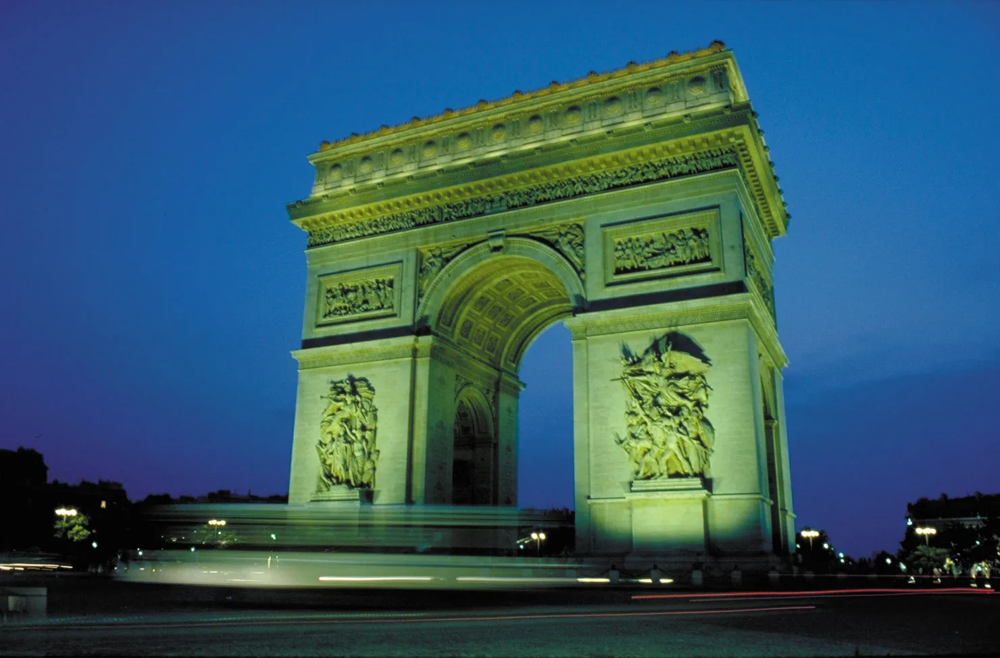

PARIS TRAVEL GUIDE
Paris, the capital of France, is a global center for art, fashion, and culture. Known for its cafe culture and landmarks like the Eiffel Tower, the city is a blend of history and modernity.

Key Attractions
1. The Eiffel Tower

The iconic symbol of Paris, the Eiffel Tower offers breathtaking views of the city from its observation decks. Visitors can dine at its restaurants or enjoy a picnic in the nearby Champ de Mars.
2. The Louvre Museum

The world's largest art museum, the Louvre is home to thousands of works, including the Mona Lisa and the Venus de Milo. It’s a must-visit for art lovers, with stunning architecture to match.
3. Notre-Dame Cathedral

Although currently undergoing restoration, Notre-Dame remains a stunning example of French Gothic architecture. Visitors can explore the area around the cathedral and enjoy views of the Seine River.
4. Montmartre and the Basilica of Sacré-Cœur

Famous for its bohemian past, Montmartre is a lively neighborhood where you can explore artists' studios and charming cafes. The Basilica of Sacré-Cœur offers stunning views of Paris from its dome.
5. Champs-Élysées and Arc de Triomphe
One of the most famous avenues in the world, the Champs-Élysées is lined with shops, theaters, and cafes. At its western end stands the magnificent Arc de Triomphe, commemorating those who fought for France.